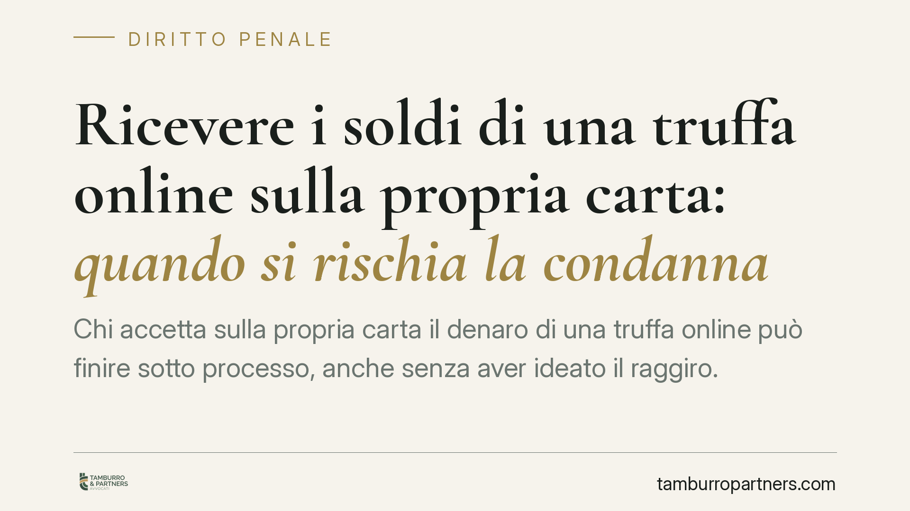

Ricevere i soldi di una truffa online sulla propria carta: quando si rischia la condanna
Chi accetta sulla propria carta il denaro di una truffa online può finire sotto processo, anche senza aver ideato il raggiro. Un consolidato orientamento della Cassazione considera l'accredito un indizio grave, valutabile insieme ad altri elementi. Chi non offre una spiegazione plausibile della provenienza delle somme rischia una condanna. Vediamo perché e come muoversi.

Il caso
Una persona riceve sulla propria carta o sul proprio conto una somma di denaro. Poco dopo scopre che quei soldi provengono da una truffa online: un pagamento estorto a una vittima con l'inganno, poi dirottato verso un conto "di passaggio".
È lo schema tipico del cosiddetto *money mule* (letteralmente "mulo di denaro", cioè il soggetto che presta il proprio conto per far transitare fondi illeciti). A volte è pienamente consapevole; a volte crede di svolgere un'attività lecita, come un finto "lavoro da casa". In entrambi i casi il problema penale esiste.
La Corte di Cassazione ha più volte affermato che la disponibilità del provento della truffa sul proprio strumento di pagamento è un elemento indiziario di rilievo. Non prova da sola la partecipazione al raggiro, ma, unita ad altri indizi, può fondare una condanna quando l'imputato non offre una ricostruzione alternativa credibile.
Inquadramento normativo
Il reato base è la truffa, prevista dall'art. 640 del codice penale: chi, con artifizi o raggiri, induce taluno in errore procurandosi un ingiusto profitto con altrui danno.
Sul piano probatorio conta l'art. 192, comma 2, del codice di procedura penale: l'esistenza di un fatto può essere desunta da indizi solo se gravi, precisi e concordanti. L'accredito sospetto è uno di questi indizi, ma il giudice deve valutarlo insieme al quadro complessivo: modalità di apertura del conto, immediato prelievo o giro delle somme, contatti con gli altri soggetti, spiegazioni fornite.
Un punto va precisato con chiarezza. In materia penale vige la presunzione di innocenza (art. 27 della Costituzione): l'onere di provare la responsabilità resta a carico dell'accusa. Non c'è alcun ribaltamento dell'onere probatorio. Tuttavia, di fronte a indizi gravi, precisi e concordanti, l'imputato ha interesse concreto ad allegare una spiegazione alternativa plausibile della provenienza del denaro. Se quella spiegazione manca o è inverosimile, il quadro indiziario a suo carico resta integro e può condurre alla condanna.
Le possibili qualificazioni
La posizione di chi "presta" il conto può essere inquadrata in modo diverso a seconda del ruolo e della consapevolezza:
- Concorso in truffa (art. 640 c.p.), se il soggetto partecipa consapevolmente allo schema fin dall'inizio, mettendo a disposizione il conto come tassello del piano.
- Riciclaggio (art. 648-bis c.p.), se riceve o trasferisce denaro di provenienza illecita per ostacolarne l'identificazione, senza aver concorso al reato presupposto.
- Autoriciclaggio (art. 648-ter.1 c.p.), se ha concorso alla truffa e poi impiega o trasferisce quei proventi per occultarne l'origine.
La differenza non è teorica: cambiano cornice sanzionatoria e strategia difensiva.
Implicazioni pratiche
Per il destinatario tipo — spesso una persona che non ha ideato nulla e si è ritrovata coinvolta — il rischio è duplice: un procedimento penale e un'azione risarcitoria della vittima.
Il baricentro del processo si sposta sulla ricostruzione della vicenda. Chi può dimostrare di essere stato a sua volta ingannato, di non aver tratto profitto e di aver reagito appena scoperto l'inganno, parte da una posizione difensiva più solida. Chi invece ha prelevato o girato subito le somme, senza sapere spiegare perché, si trova esposto.
La prudenza nella gestione dei propri strumenti di pagamento resta il primo presidio: conti e carte non vanno mai messi a disposizione di terzi, nemmeno per presunti impieghi occasionali.
Cosa fare in concreto
- Non toccare le somme sospette. Non prelevare e non trasferire il denaro accreditato: qualsiasi movimento successivo aggrava la posizione.
- Segnala subito alla banca l'accredito sospetto e chiedi il blocco o il congelamento delle somme, conservando ricevuta della comunicazione.
- Conserva ogni traccia di contatti, messaggi, e-mail e annunci di lavoro che hanno preceduto l'accredito: possono documentare la buona fede.
- Valuta la denuncia presso le autorità se ritieni di essere stato a tua volta raggirato.
- Rivolgiti a un difensore prima di rendere qualsiasi dichiarazione: una spiegazione ricostruita male, in sede di indagini, può pesare più del silenzio.
Affrontare la vicenda in modo tempestivo e ordinato consente di costruire per tempo la propria ricostruzione dei fatti, prima che il quadro indiziario si consolidi.
---
*Contributo informativo a cura di Tamburro & Partners - Avv. Giuseppe Tamburro. Non costituisce parere legale.*
Ogni condominio ha una storia a sé.
Se gestisci un'amministrazione e vuoi un confronto su una specifica questione condominiale, scrivi allo studio. Ti rispondiamo entro un giorno lavorativo.